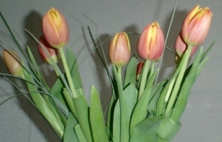

ナコスのメディア活動
ナコスのメディア活動
ナコスでは設立以来、新聞、雑誌、ラジオ、そして、ウェブ上で、日本語学習、英語学習に関する記事、エッセイなどの連載、また、ラジオ番組としてラジオ英語講座などを実施してきました。以下は、ナコスのメディア活動の足跡です。
■ 「NACOS Radio」 ２０１１年～
日本語と英語の録音による「健康コーナー」「俳句」「日本の諺」と「日本語研修生の小話」を紹介。
（当サイトの英語版、"Learn Japanese"のページで、音声もお聞きいただけます。）
■ 「NACOS Medical Expressions」 医療表現 ２００８年 ～
日英両語で、アメリカからの「新しい医療情報を出来る限り早く」を目指しています。担当は１９９２年以来続いている共著者の中村美智子とヨーコケリー。イラストをノーマンケリー医師が担当。
「ドクター夏子の医療談話室」、「ナコス英会話の掲示板」（ハワイ・パシフィック・プレス紙上に連載）を、ナコスウェブサイト（英語版）「NACOS Articles」に、新たに登場させています。
（当サイトの英語版、"Learn Japanese"のページでご覧になれます。）
■ 「ナコス 日本のことわざ教室」 ２００９年 ～ ２０１１年
「ハワイ・パシフィック・プレス」に月１回連載。
日本語学習者の為、外国人に使い勝手の良い日本のことわざを選び紹介。
（当サイトの英語版、"Learn Japanese"のページでご覧になれます。）
■ 「ナコス 英会話の掲示板」 ２００３年 ～ ２０１１年
「ハワイ・パシフィック・プレス」に月１回連載。病気になった時などのいろいろな表現例を英語と日本語で紹介。麻酔科医で医学書の翻訳を手がけているヨーコケリーとの共著。同紙面には小児科医で画家でもあるノーマンケリーのイラスト、ヨーコの「ネブラスカ便り」も紹介。
（ショーケースでご覧になれます。）
■ 「Violin弾きのお美っちゃん」 ２００５年 ～ ２０１１年
「ハワイ・パシフィック・プレス」に、中村美智子が何気ない日常生活からテーマを拾ったエッセイ「Violin弾きのお美っちゃん」を連載。
（当サイト「ナコス長屋」"Fiddler Mi-chan"でご覧になれます。）
■ 「ナコス English の熟語 (Idiom) 教室」 １９９４年 〜 ２００９年
「イーストウエスト・ジャーナル」に月１回連載。アメリカに駐在する日本人ビジネスマンが、職場や職場での付き合いで、知っておくと便利なイディオムを紹介。
（当サイトでご覧になれます。）
■ FMラジオ J-WAVE ２００４年
DoCoMo Happy Landingにラジオ出演 インタビュー
■ 毎日新聞USA ２００２年
毎日新聞ナコス特集 「もうひとつのハワイ」 特集記事
ナコスの実施している研修スタイルや言葉に対する取り組み方についてのインタビュー。
★伝える努力をしなかった私たち
★共生の時代だからこそ
★ホノルルでのユニークな試み
■ 毎日新聞USA 「ろこハワイ ホノルル通信」 ２００２年 〜 ２００３年
「毎日新聞USA」のウェブサイト、毎日ドットコムに「ヴァイオリン弾きのお美っちゃん」のタイトルのもと「ホノルル通信」を連載。月２〜３回のペースで更新。 エッセイ
■ ハワイ州政府 ハワイ州政府による学校案内 １９９７年
日本語・英語版 表紙 挨拶 目次 ナコス案内
中国語・韓国語版 表紙 挨拶 目次 ナコス案内
■ 「ドクター夏子の医療談話室」 １９９２年 〜 ２００３年
「ハワイ・パシフィック・プレス」に月２回連載。医療関係のことばと表現例を英語と日本語で紹介。ネブラスカ州で医学書の翻訳を手懸けている麻酔科医ヨーコケリーとの共著。
■ 「オサムのドギマギ・コミュニケーション」 １９９２年 〜 ２００２年
「ジャパニーズ・ビーチプレス」に月２回連載。ドギマギ、どぎまぎするだけで、言葉が出ず、悔しい思いをする場面。あるいは、我慢しようと思えばできるのだけれど、この一言が伝えられたら、もっと心地よい時間を過ごせる。そんな表現例をおもに紹介。（当サイトでご覧になれます。）
■ ハワイ・パシフィック・プレス １９９８年
日本の生活文化をテーマにとった日本語講座 日本語はおもしろい
■ ナコスホームページを開設 １９９５年
英語・日本語研修案内をインターネット上に展開するとともに、研修生・スタッフのページ作成を開始（nacos-hi.com）。翌年、URLを変更して改訂版を作成（nacos.org）。研修生・スタッフのページは、後年、ナコス長屋として独立させる（nacosnagaya.org）。
■ ジャパニーズ・ビーチプレス
ビーチプレス、ナコス来訪によるインタビュー。
連載１００回記念インタビュー記事 １９９５年１２月１５日 特集記事
ラジオ英語講座 案内記事 １９９１年７月１９日 案内記事
■ ハワイ報知
ナコス創立６周年 記念記事 １９９５年８月５日 記念記事
ラジオ英語講座 案内記事 １９９２年９月２９日 案内記事
■ ハワイ・パシフィック・プレス
ラジオ英語講座三周年 記念記事 １９９４年６月 記念記事
■ 「マイケルとゼロからの出発」 １９９１年 〜 １９９４年
ハワイの日本語放送局KZOO（ケーズー）ラジオで、月曜日から金曜日まで、毎夜、１０時からのラジオ英語講座。ハワイ州に住んでいらっしゃる人達の日常生活から、毎月テーマを取り、ハワイ州にお住まいの方々を対象とした英語プログラム。
■ 「いますぐ始めよう！」 １９９３年 〜 １９９４年
月刊紙 “Ha Uy di Thoi Bao”（ベトナム語新聞）に、ベトナム語で月１回連載。日本の日常生活に焦点を当てた、基礎レベルの日本語講座。 特集記事
■ 「日本語はおもしろい」 １９９１年 〜 １９９２年
KZOO（ケーズー）ラジオ局が発行する雑誌に連載。四季折々の日本の生活文化をテーマにとった日本語講座。
■ その他 ナコスメディア活動 例
ハワイ報知 第二次世界大戦 真珠湾攻撃 原爆 (NO.1) (NO.2) （英文）
ハワイ・パシフィック・プレス ２００１年 私の健康法
ジャパニーズ・ビーチ・プレス １９９８年 ドッグショー
Ilio & Popoki １９９６年 American Kennel Club
ハワイ報知 １９９５年 ニュー・トーキョー・レストラン
百万人の福音 １９８９年 プログラム案内
ホノルル・スターブルテン １９８９年 ヴァイオリンコンサート

| © 1995-2013 NACOS International Institute. All Rights Reserved. |